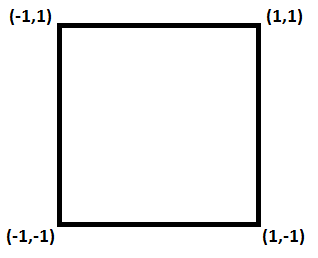
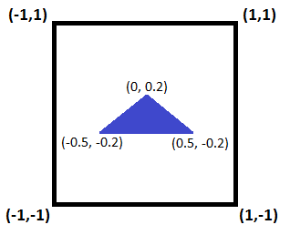
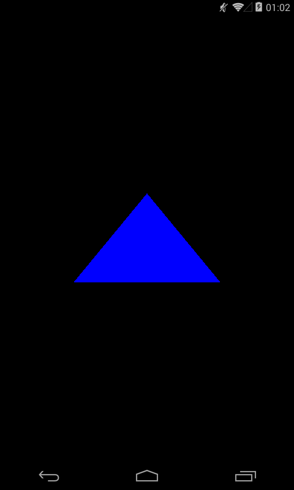

В этом уроке:
- создаем шейдеры
- рисуем треугольник
Исходники уроков доступны на гитхабе.
На прошлом уроке мы создали простейший проект, в котором просто закрасили surface в зеленый цвет. При этом мы работали на совсем верхнем уровне и даже не коснулись основного OpenGL механизма, т.е. шейдеров.
Шейдеры – это программы, написанные на языке GLSL. В 3D графике все изображение строится из графических примитивов: точек, линий, треугольников. Чтобы нарисовать примитив, графический процессор должен знать координаты его вершин и цвет заливки для каждой точки. Именно эту информацию и предоставляют ему шейдеры. И, соответственно, существует два типа шейдеров:
- вершинные, которые оперируют вершинами графических примитивов.
- фрагментные, отвечают за цвет каждой точки графических примитивов
Т.е. если мы рисуем, например, треугольник, то окончательные координаты его вершин будут определены в вершинном шейдере. Этот шейдер будет вызван один раз для каждой вершины.
А цвет каждой точки треугольника будет определен в фрагментном шейдере. Этот шейдер будет вызван для каждой точки треугольника.
От нас требуется создать эти шейдеры и передать в них данные из нашего приложения. В этом уроке мы создадим вершинный и фрагментный шейдеры и нарисуем с их помощью треугольник.
Для создания приложения можно взять проект с прошлого урока или создать его копию.
В папке res создадим папку raw и в ней создадим файл: vertex_shader.glsl:
attribute vec4 a_Position;
void main() {
gl_Position = a_Position;
}
Это вершинный шейдер. Синтаксис похож на C или java. Разберем, что есть в этом шейдере.
Метод main – основной метод шейдера, который будет вызван системой.
Атрибут a_Position с типом vec4 – это вектор из 4 float значений. Этот атрибут может хранить в себе трехмерные координаты вершины графического примитива. Но кроме трех координат вершины (x,y,z) нам в дальнейшем понадобится еще одно значение, поэтому для передачи данных о вершинах используется vec4, а не vec3. Данные в этот атрибут мы будем передавать из нашего приложения.
Т.к. мы собрались рисовать треугольник, то мы будем передавать данные о трех вершинах. И для каждой из них будет выполнен этот шейдер, и в a_Position будут данные о текущей вершине.
Переменная gl_Position – это специальная переменная, в которую мы должны поместить данные о положении вершины. Т.е. эта переменная и есть результат работы вершинного шейдера. Эти данные далее будут использованы графическим процессором для определения положения вершин.
В нашем шейдере мы просто передаем значение из a_Position в gl_Position. Т.е. этот шейдер совсем простой и никак не влияет на входные данные (a_Position), а только транслирует их дальше (gl_Position).
С вершинами разобрались. Теперь в res\raw создаем файл фрагментного шейдера.
fragment_shader.glsl:
precision mediump float;
uniform vec4 u_Color;
void main() {
gl_FragColor = u_Color;
}
Первая строка устанавливает точность вычислений для float значений. Всего есть три режима: lowp, mediump, highp. Из названий понятна их точность. Но, разумеется, чем выше точность, тем ниже производительность.
Для работы с цветом вполне достаточно точности mediump. Поэтому используем ее в нашем шейдере. В вершинном шейдере мы точность не указывали, там уже по дефолту используется highp, т.к. для расчета вершин нужна высокая точность.
Метод main является основным, аналогично, как и в вершинном шейдере.
Переменная u_Color будет содержать в себе цвет. Она также имеет тип vec4, это вполне подходит под 4 компонента цвета RGBA. Значение в эту переменную мы будем задавать в нашем приложении. Слово uniform перед ней означает, что это значение будет всегда одинаково для всех фрагментов (точек), которые будут обработаны этим фрагментным шейдером.
Переменная gl_FragColor – это специальная переменная шейдера, в которую мы должны поместить значение цвета для текущего фрагмента. Напомню, что для каждой точки (фрагмента) треугольника система вызовет этот фрагментный шейдер, и шейдер должен (в gl_FragColor) вернуть значение цвета, которое система использует для рисования точки.
В gl_FragColor мы просто помещаем значение u_Color. Т.е. фрагментный шейдер, так же, как и вершинный очень простой и транслирует данные дальше без всяких изменений.
Шейдеры готовы. Теперь наше приложение должно сделать кучу вещей, чтобы эти шейдеры заработали:
- прочитать шейдеры из файлов и скомпилировать их
- создать из шейдеров программу
- найти в программе входящие параметры и передать туда данные
Создаем классы.
FileUtils.java:
import android.content.Context;
import android.content.res.Resources;
import java.io.BufferedReader;
import java.io.IOException;
import java.io.InputStream;
import java.io.InputStreamReader;
public class FileUtils {
public static String readTextFromRaw(Context context, int resourceId) {
StringBuilder stringBuilder = new StringBuilder();
try {
BufferedReader bufferedReader = null;
try {
InputStream inputStream = context.getResources().openRawResource(resourceId);
bufferedReader = new BufferedReader(new InputStreamReader(inputStream));
String line;
while ((line = bufferedReader.readLine()) != null) {
stringBuilder.append(line);
stringBuilder.append("\r\n");
}
} finally {
if (bufferedReader != null) {
bufferedReader.close();
}
}
} catch (IOException ioex) {
ioex.printStackTrace();
} catch (Resources.NotFoundException nfex) {
nfex.printStackTrace();
}
return stringBuilder.toString();
}
}
В этом классе только один метод readTextFromRaw, который по id прочтет raw-ресурс и вернет его содержимое в виде строки. Т.е. он будет читать содержимое файлов-шейдеров и возвращать нам это содержимое в текстовом виде.
Следующий класс – ShaderUtils.java:
import android.content.Context;
import static android.opengl.GLES20.GL_COMPILE_STATUS;
import static android.opengl.GLES20.GL_LINK_STATUS;
import static android.opengl.GLES20.glAttachShader;
import static android.opengl.GLES20.glCompileShader;
import static android.opengl.GLES20.glCreateProgram;
import static android.opengl.GLES20.glCreateShader;
import static android.opengl.GLES20.glDeleteProgram;
import static android.opengl.GLES20.glDeleteShader;
import static android.opengl.GLES20.glGetProgramiv;
import static android.opengl.GLES20.glGetShaderiv;
import static android.opengl.GLES20.glLinkProgram;
import static android.opengl.GLES20.glShaderSource;
public class ShaderUtils {
public static int createProgram(int vertexShaderId, int fragmentShaderId) {
final int programId = glCreateProgram();
if (programId == 0) {
return 0;
}
glAttachShader(programId, vertexShaderId);
glAttachShader(programId, fragmentShaderId);
glLinkProgram(programId);
final int[] linkStatus = new int[1];
glGetProgramiv(programId, GL_LINK_STATUS, linkStatus, 0);
if (linkStatus[0] == 0) {
glDeleteProgram(programId);
return 0;
}
return programId;
}
static int createShader(Context context, int type, int shaderRawId) {
String shaderText = FileUtils.readTextFromRaw(context, shaderRawId);
return ShaderUtils.createShader(type, shaderText);
}
static int createShader(int type, String shaderText) {
final int shaderId = glCreateShader(type);
if (shaderId == 0) {
return 0;
}
glShaderSource(shaderId, shaderText);
glCompileShader(shaderId);
final int[] compileStatus = new int[1];
glGetShaderiv(shaderId, GL_COMPILE_STATUS, compileStatus, 0);
if (compileStatus[0] == 0) {
glDeleteShader(shaderId);
return 0;
}
return shaderId;
}
}
Здесь содержатся все методы по компиляции шейдеров и созданию из них программы. В принципе, пока можно не вникать в работу этого класса. Мы создаем его один раз и он не будет изменяться на протяжении нескольких уроков. Здесь не будет ни вершин, ни координат, ни цветов, ни вычислений. Мы просто вынесли в этот класс всю логику по подготовке шейдеров к использованию в нашем приложении. Так что пока можете просмотреть его поверхностно.
Начнем с методов createShader.
int createShader(int type, Context context, int shaderRawId)
Принимает на вход контекст, тип шейдера и id raw-ресурса. Читает содержимое (исходник) шейдера в строку и вызывает вторую версию метода
int createShader(int type, String shaderText)
Этот метод принимает на вход тип шейдера и его содержимое в виде строки, и далее вызывает кучу OpenGL методов по созданию и компиляции шейдера:
glCreateShader – создает пустой объект шейдера и возвращает его id в переменную shaderId. На вход принимает тип шейдера: GL_VERTEX_SHADER (вершинный) или GL_FRAGMENT_SHADER (фрагментный). Вернет 0 если по каким-то причинам шейдер создать не удалось.
glShaderSource – берет исходник шейдера из строки и ассоциирует его с шейдером shaderId.
glCompileShader – компилирует шейдер shaderId
glGetShaderiv – позволяет получить статус компиляции (GL_COMPILE_STATUS) шейдера shaderId. Метод поместит статус в массив compileStatus, в элемент с индексом 0. Если компиляция прошла успешно, то статус будет равен 1 (GL_TRUE), иначе – 0 (GL_FALSE).
Далее мы проверяем, если компиляция не удалась, т.е. если compileStatus[0] == 0, то удаляем объект шейдера методом glDeleteShader и возвращаем 0.
Если же все ок, то возвращаем shaderId. Т.е. шейдер готов и у нас есть его id.
Метод
int createProgram(Context context, int vertexShaderRawId, int fragmentShaderRawId)
создает программу. Программа – это просто пара шейдеров: вершинный + фрагментный. Эта пара шейдеров должна работать в связке, т.к. первый отвечает за вершины, а второй за цвета, и ни один из них по одиночке не даст нам итоговой картинки. Поэтому их объединяют в программу.
Метод принимает на вход id вершинного и фрагментного шейдеров.
glCreateProgram – создает пустую программу и возвращает ее id в переменную programId. Если вместо id получаем 0, значит что-то пошло не так, возвращаем 0 вместо id программы.
Далее мы методом glAttachShader аттачим шейдеры к программе. Т.е. говорим системе, что шейдеры vertexShaderId и fragmentShaderId будут частями программы programId.
glLinkProgram – формирует программу из приаттаченных шейдеров.
glGetProgramiv – позволяет проверить статус формирования программы. Тут все аналогично шейдерному методу glGetShaderiv. Если что-то пошло не так, то удаляем программу методом glDeleteProgram.
Если все ок, то возвращаем programId. Т.е. программа готова и у нас есть ее id.
Класс OpenGLRenderer.java. На прошлом уроке мы его уже создавали, но в нем будут серьезные изменения, поэтому привожу здесь весь код
import android.content.Context;
import android.opengl.GLSurfaceView.Renderer;
import java.nio.ByteBuffer;
import java.nio.ByteOrder;
import java.nio.FloatBuffer;
import javax.microedition.khronos.egl.EGLConfig;
import javax.microedition.khronos.opengles.GL10;
import static android.opengl.GLES20.GL_COLOR_BUFFER_BIT;
import static android.opengl.GLES20.GL_FLOAT;
import static android.opengl.GLES20.GL_FRAGMENT_SHADER;
import static android.opengl.GLES20.GL_TRIANGLES;
import static android.opengl.GLES20.GL_VERTEX_SHADER;
import static android.opengl.GLES20.glClear;
import static android.opengl.GLES20.glClearColor;
import static android.opengl.GLES20.glDrawArrays;
import static android.opengl.GLES20.glEnableVertexAttribArray;
import static android.opengl.GLES20.glGetAttribLocation;
import static android.opengl.GLES20.glGetUniformLocation;
import static android.opengl.GLES20.glUniform4f;
import static android.opengl.GLES20.glUseProgram;
import static android.opengl.GLES20.glVertexAttribPointer;
import static android.opengl.GLES20.glViewport;
public class OpenGLRenderer implements Renderer {
private Context context;
private int programId;
private FloatBuffer vertexData;
private int uColorLocation;
private int aPositionLocation;
public OpenGLRenderer(Context context) {
this.context = context;
prepareData();
}
@Override
public void onSurfaceCreated(GL10 arg0, EGLConfig arg1) {
glClearColor(0f, 0f, 0f, 1f);
int vertexShaderId = ShaderUtils.createShader(context, GL_VERTEX_SHADER, R.raw.vertex_shader);
int fragmentShaderId = ShaderUtils.createShader(context, GL_FRAGMENT_SHADER, R.raw.fragment_shader);
programId = ShaderUtils.createProgram(vertexShaderId, fragmentShaderId);
glUseProgram(programId);
bindData();
}
@Override
public void onSurfaceChanged(GL10 arg0, int width, int height) {
glViewport(0, 0, width, height);
}
private void prepareData() {
float[] vertices = {-0.5f, -0.2f, 0.0f, 0.2f, 0.5f, -0.2f,};
vertexData = ByteBuffer.allocateDirect(vertices.length * 4).order(ByteOrder.nativeOrder()).asFloatBuffer();
vertexData.put(vertices);
}
private void bindData() {
uColorLocation = glGetUniformLocation(programId, "u_Color");
glUniform4f(uColorLocation, 0.0f, 0.0f, 1.0f, 1.0f);
aPositionLocation = glGetAttribLocation(programId, "a_Position");
vertexData.position(0);
glVertexAttribPointer(aPositionLocation, 2, GL_FLOAT, false, 0, vertexData);
glEnableVertexAttribArray(aPositionLocation);
}
@Override
public void onDrawFrame(GL10 arg0) {
glClear(GL_COLOR_BUFFER_BIT);
glDrawArrays(GL_TRIANGLES, 0, 3);
}
}
В конструкторе вызываем метод prepareData, в котором будут подготовлены данные для передачи в шейдеры.
В onSurfaceCreated ставим черным дефолтный цвет очистки. Затем, методами класса ShaderUtils создаем шейдеры, получаем их id: vertexShaderId (вершинный) и fragmentShaderId (фрагментный), создаем из них программу programId, и методом glUseProgram сообщаем системе, что эту программу надо использовать для построения изображения. Далее, методом bindData передаем данные в шейдеры.
Метод onSurfaceChanged без изменений, задаем область рисования на всю поверхность surface-компонента.
Теперь самое интересное.
Метод prepareData. В этом методе мы подготавливаем данные для передачи их в шейдеры. СНачала создаем массив из 6-ти элементов. Я в коде разделил эти 6 элементов на три строки для наглядности, т.к. на самом деле это координаты трех точек: (-0.5, -0.2), (0, 0.2) и (0.5, -0.2). Эти три точки – вершины треугольника, который мы собираемся нарисовать. Почему такие маленькие значения? Особенно по сравнению с канвой, где мы использовали координаты от 0 до 1000. Потому что OpenGL свою область рисования (т.е. экран) приведет к диапазону [-1, 1] по ширине и высоте.

И мы учитываем это при рисовании треугольника

Далее нам придется сконвертить float[] массив в буфер FloatBuffer, т.к. это необходимо для передачи данных в шейдеры.
Методом allocateDirect выделяем память под буфер. Т.к. вершины в массиве у нас в формате float, а размер float равен 4 байта, то нам необходимо байт памяти: 4 * кол-во вершин.
Метод order задает порядок байтов. Если кто хочет вникнуть в тему – вам сюда. Но пока что это для нас не имеет значения и мы укажем здесь ByteOrder.nativeOrder() – системный дефолтный порядок.
Метод asFloatBuffer возвращает нам созданный буфер байтов, как FloatBuffer.
Методом put передаем ему данные о вершинах из массива vertices.
Метод bindData. Здесь мы будем передавать данные в шейдер.
Методом glGetUniformLocation мы в переменную uColorLocation получаем положение в шейдере нашей uniform переменной u_Color (см. код фрагментного шейдера fragment_shader.glsl).
Методом glUniform4f передаем в uColorLocation 4 float значения, которые являются RGBA компонентами синего цвета (0,0,1,1). Эти данные пойдут в шейдер в переменную u_Color.
Аналогично, методом glGetAttribLocation в переменную aPositionLocation получаем положение attribute переменной a_Position (см. код вершинного шейдера vertex_shader.glsl).
Методом position сообщаем системе, что данные из vertexData надо будет читать начиная с элемента с индексом 0, т.е. с самого начала.
Методом glVertexAttribPointer мы сообщаем системе, что шейдеру для своего атрибута a_Position необходимо читать данные из массива vertexData. А параметры этого метода позволяют подробно задать правила чтения. Рассмотрим какие параметры идут на вход этому методу
void glVertexAttribPointer (int indx, int size, int type, boolean normalized, int stride, Buffer ptr)
int indx – переменная указывающая на положение атрибута в шейдере. Тут все понятно, используем ранее полученную aPositionLocation, которая знает где сидит a_Position.
int size – указывает системе, сколько элементов буфера vertexData брать для заполнения атрибута a_Position.
int type – передаем GL_FLOAT, т.к. у нас float значения
boolean normalized – этот флаг нам пока неактуален, ставим false
int stride – используется при передаче более чем одного атрибута в массиве. Мы пока передаем данные только для одного атрибута, поэтому пока ставим 0. Но в последующих уроках мы еще используем этот параметр.
Buffer ptr – буффер с данными, т.е. vertexData.
Остановимся подробнее на параметре size. Если вы помните, a_Position у нас имеет тип vec4. Т.е. он состоит из 4 float значений. И по идее, если мы хотим нарисовать три точки, мы должны послать 3*4 = 12 значений, чтобы вершинный шейдер вызвался три раза и атрибут был заполнен на все 4 значения.
Т.е. если мы посылаем например такой массив [v1, v2, v3, v4, v5, v6, v7, v8, v9, v10, v11, v12] и укажем size = 4, то система будет брать каждые 4 значения, писать их в атрибут и запускать вершинный шейдер. Т.к. мы будем рисовать три вершины (мы это еще укажем чуть позднее), то шейдер отработает три раза и значение a_Position у него при этих запусках будут следующие:
Первый запуск: v1, v2, v3, v4
Второй запуск: v5, v6, v7, v8
Третий запуск: v9, v10, v11, v12
Но мы посылаем всего 6 значений (например v1, v2, v3, v4, v5, v6) и сообщаем системе, что для заполнения атрибута ей необходимо брать только 2 значения. Т.е. система будет брать каждые два значения, писать их в атрибут и запускать вершинный шейдер. В итоге шейдер будет иметь следующие значения a_Position:
Первый запуск: v1, v2, 0, 1
Второй запуск: v3, v4, 0, 1
Третий запуск: v5, v6, 0 ,1
Первые два элемента атрибута система возьмет из массива, а в третий и четвертый мы ей ничего не дали, поэтому она поставит дефолтные значения. Дефолтные значения для vec4 таковы (0,0,0,1).
Все, данные в шейдер мы передали. И напоследок нам необходимо включить атрибут aPositionLocation методом glEnableVertexAttribArray.
В методе onDrawFrame мы очищаем экран дефолтным цветом и методом glDrawArrays просим систему нарисовать нам треугольник. На вход этому методу идут параметры:
int mode – здесь мы указываем какой тип графических примитивов хотим рисовать. В нашем случае это треугольник: GL_TRIANGLES.
int first – указываем, что брать вершины из массива вершин надо начиная с элемента с индексом 0, т.е. с первого элемента массива
int count – кол-во вершин которое необходимо использовать для рисования. Указываем 3, т.к. для треугольника необходимы три вершины. И в массиве мы передавали данные для трех вершин.
Код для класса MainActivity.java можно взять с прошлого урока, только надо будет чуть поменять строку:
glSurfaceView.setRenderer(new OpenGLRenderer(this)); т.к. мы добавили Context в конструктор рендера.
Приложение готово. Все это мы накодили, чтобы просто нарисовать синий треугольник на черном фоне… )
Запускаем приложение

Синий треугольник - ОК
Очень много инфы получилось для одного урока, но меньше уже никак было не разбить. Если что-то непонятно, не унывайте, это норма. В следующих уроках будем рисовать разные графические примитивы, добавим передачу цвета, используем текстуры, и вся эта система передачи данных в шейдеры станет гораздо понятнее.